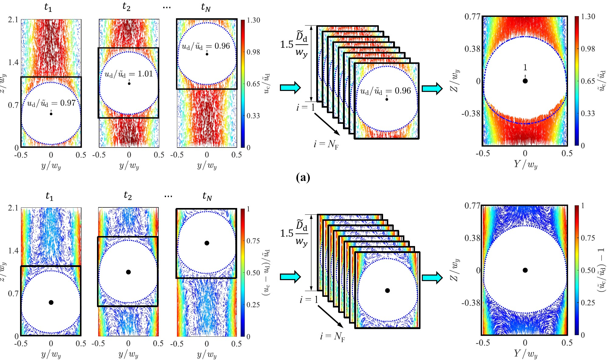
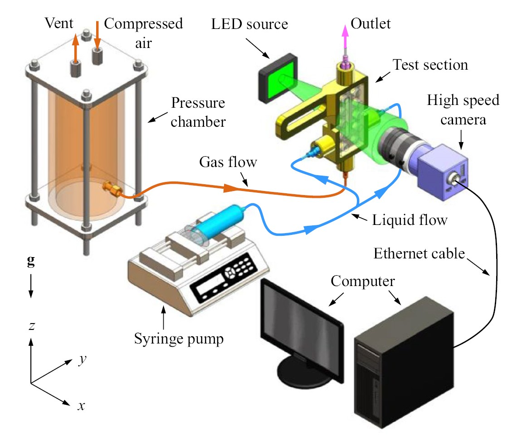
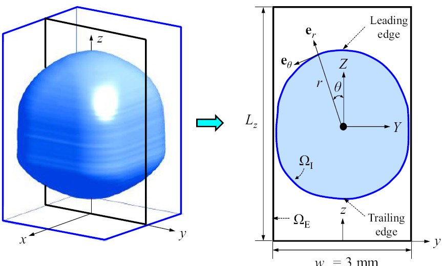

Turning Scattered Particle Tracks into Interface-Resolved Flow Fields
Particle tracking can measure fluid motion very close to a bubble, but the resulting velocity vectors are scattered irregularly throughout the liquid. Connecting those vectors directly produces elongated, highly skewed elements that can corrupt velocity gradients, vorticity, strain rate, and pressure calculations. The problem becomes exponentially harder when the interface moves, deforms, breaks apart, and merges again. I developed an image-driven tessellation methodology that reconstructs these irregular measurements on a high-quality, dynamically evolving mesh. The approach follows the measured interface, controls the resolution near it, maps the experimental velocity data onto computational nodes, and explicitly identifies the velocity vectors closest to the gas-liquid boundary.
Why Scattered PTV Data Need a Mesh
Particle tracking velocimetry (PTV) determines the displacement of individual tracer particles between successive images. Unlike PIV, which reports velocities on predefined interrogation windows, PTV can locate measurements irregularly and potentially much closer to a moving interface. However, this spatial resolution creates a post-processing problem: quantities such as pressure, vorticity, strain rate, and Reynolds stresses depend on velocity gradients, which cannot be computed robustly from isolated vectors without first constructing an interconnected representation of the flow domain.
Using the tracer-particle positions directly as mesh nodes is a common solution, but because particles are distributed randomly, direct Delaunay triangulation produces meshes containing elongated, poorly shaped elements. The challenge is therefore not merely to connect the particles, but to create a mesh that preserves the measured interface shape, adapts as it moves and deforms, maintains good element quality, resolves the near-interface region, and remains suitable for numerical differentiation.
The Engineering Challenge
The most detailed measurements occurred close to a boundary that was continuously moving and deforming. Particle tracking provides highly resolved but irregularly distributed velocity measurements. Using particle positions directly as mesh nodes produces severely skewed elements, while a moving gas-liquid interface requires the domain boundary to be reconstructed at every instant. The method had to follow that interface seamlessly without sacrificing mesh quality or altering the measured flow information.
Measurement Principle
High-speed shadow imaging captures both the bubble outline and the motion of tracer particles in the surrounding liquid. Particle tracking provides scattered liquid-velocity vectors, while image processing extracts the instantaneous gas-liquid boundary. A high-quality triangular mesh is then generated independently of the random particle locations, and the measured velocities are mapped onto its nodes for interface-resolved analysis.
The Method at a Glance
- Experimental Domains: 3×3 mm² straight square channel and a 0.5 mm throat sinusoidal channel.
- High-Speed Imaging: 300–1,500 frames/s using 8–15 µm tracer particles.
- ~92% Node Reduction: Drastic contour simplification preserving exact topology.
- >45× Density Increase: Achieved through bubble-centred ensemble averaging.
- < 0.03 Average Skewness: Exceptional mesh quality in quasi-steady cases.
- < 1% Velocity Variance: Between the two most refined near-interface solutions.

The Computational Workflow
The methodology was rigorously tested in two complementary validation cases: quasi-steady bubble motion in a straight channel, and strongly unsteady bubble deformation, breakup, wake interaction, and recoalescence in a sinusoidal constriction. The processing framework consists of seven integrated steps:
1. Detect the Interface
The strong intensity contrast between gas and liquid regions isolates the bubble via morphological processing (binarisation, erosion, dilation, hole-filling, and contour tracing using the Moore-neighbour algorithm). The detected bubble is dynamically masked from the tracer images, preventing false velocity vectors inside the gas phase.
2. Simplify Without Losing Shape
Raw contour detection produces thousands of tightly packed, irregular boundary nodes. The Douglas-Peucker line-simplification algorithm was applied to reduce the interface-node count by approximately 92% (e.g., from 3,770 to 297 nodes) while preserving the measured bubble shape, preventing excessively dense and skewed mesh elements near the interface.
3. Redistribute the Boundary Nodes
To obtain a controllable interface discretisation, the boundary is transformed into a bubble-centred radial-angular coordinate system. Cubic interpolation reconstructs the radial position at prescribed angular intervals. Changing the angular spacing directly controls boundary resolution (e.g., angular increments of 8° and 2° produced 46 and 181 uniformly distributed interface nodes, respectively).
4. Increase Measurement Density
For bubbles in quasi-steady motion, velocity fields are transformed into a pseudo-Lagrangian reference frame moving with the bubble. Subtracting the bubble velocity allows instantaneous PTV fields to be aligned and ensemble-averaged, increasing vector density by more than 45 times without sacrificing proximity to the interface.
5. Generate a High-Quality Dynamic Mesh
The liquid domain is discretised using constrained Delaunay triangulation. By allowing the algorithm to optimize interior node placement while enforcing measured walls and interface boundaries, area-averaged skewness dropped drastically from 0.415 (unacceptable) to ~0.026, generating a flawless mesh of nearly 29,000 elements.
6. Map the Measurements onto the Mesh
Because high-quality mesh nodes no longer coincide with original tracer positions, a custom MATLAB interpolation framework transfers scattered experimental velocities onto generated nodes, retaining original measurement integrity while providing a connected network for numerical differentiation.
7. Identify the Nearest Measured Flow
A local flagging algorithm identifies mesh elements sharing an edge with the gas-liquid interface and extracts the original PTV measurements closest to each interface location. The search window expands only until a valid velocity is found, providing direct access to radial and tangential liquid velocities immediately adjacent to the bubble.
What the Method Achieved
This approach successfully bridges the gap between raw experimental velocimetry and computational fluid mechanics requirements, resulting in four major improvements over traditional particle-based meshing:
High mesh quality without sacrificing experimental detail
Direct triangulation of particle locations generated unacceptable average skewness (>0.4). Allowing the algorithm to select optimal node positions reduced the area-averaged skewness to below 0.03, far below the recommended quality limit of 0.33.
Converged near-interface velocities
Mesh-sensitivity analysis demonstrated that the tangential velocity difference between the two most refined meshes was below 1%. The reconstructed near-interface flow becomes effectively independent of mesh refinement beyond a suitable interface-node spacing.
Robustness during severe breakup and recoalescence
When tested under extreme transient conditions—a bubble deforming through a 0.5 mm throat, splitting, and recoalescing 6.6 ms later—the dynamic method maintained an average mesh skewness below 0.06, capturing the narrow liquid regions cleanly where standard tracking completely failed.
Preserved measurement integrity
The interface-flagging process successfully recovered velocities within the experimental variation of the original PTV data, reducing maximum absolute relative differences to ~1% for the finest tested resolution.
Visualising the Tessellation Process
1. Experimental Platform
Air and a viscous glycerol-water solution flow through transparent, SLA-manufactured channels captured via high-resoultion shadow imaging.

2. Interface Extraction
From raw image to measured boundary: Morphological image processing isolates the bubble and dynamically masks the gas region.

Why the Result Matters
Many experimentally important quantities cannot be obtained directly from raw particle tracks. Pressure, vorticity, strain, energy dissipation, and interfacial stress all require accurate spatial derivatives of velocity, and those calculations are only as reliable as the numerical network on which they are represented. This work provides a critical bridge between experimental velocimetry and computational fluid mechanics. By preserving the experimentally measured interface and generating a geometrically sound numerical representation, the methodology paves the way for accurate gradient-based calculations in domains like bubble/droplet transport, boiling, microfluidics, biological flows, and interface-resolved validation of multiphase CFD simulations.
Journal Publication & Resources
R. Azadi, J. Wong, and D. S. Nobes, “Determination of fluid flow adjacent to a gas/liquid interface using particle tracking velocimetry (PTV) and a high-quality tessellation approach,” Experiments in Fluids, vol. 62, p. 48, 2021.
The publication includes supplementary material showing the evolving interface, mesh generation, and velocity reconstruction during highly deformable bubble motion.